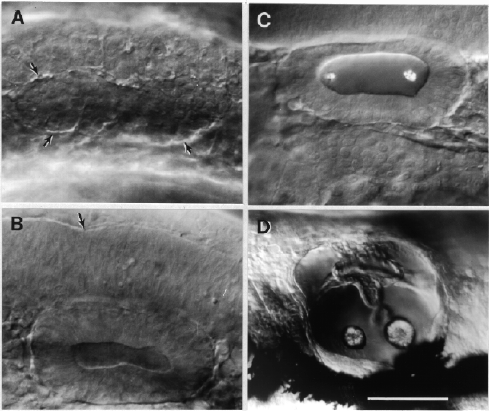

Modified from: Kimmel et al., 1955. Developmental Dynamics 203:253-310. Copyright © 1995 Wiley-Liss, Inc. Reprinted only by permission of Wiley-Liss, a subsidiary of John Wiley & Sons, Inc.
Fig. 27. Morphogenesis of the otic vesicle. Left side Nomarski views, dorsal to the top, anterior to the left. A: The primordium (outlined by arrows) of the inner ear appears as a solid otic placode beside the hindbrain by the 9-somite stage (13.5 h). B: At the 19-somite stage (18.5 h) the placode has hollowed out in the otic vesicle. The arrow indicates the boundary between rhombomeres 4 and 5 along the dorsolateral wall of the hindbrain. C: Otoliths become prominent in the otic vesicle by the prim-6 stage (25 h). D: Pec-fin stage at 60 h. Morphogenesis of the walls of the vesicle have formed the primordia of the semicircular canals dorsally, separated from otolith-containing chambers ventrally. By this time the vesicle is becoming housed in a refractile cartilaginous capsule. The dark shadows the bottom are out-of-focus melanophores. Scale bar: 50 µm for A-C, 100 µm for D.

Figure 27